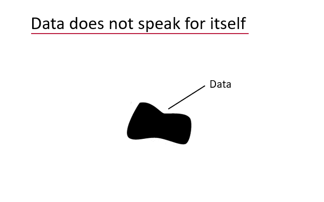
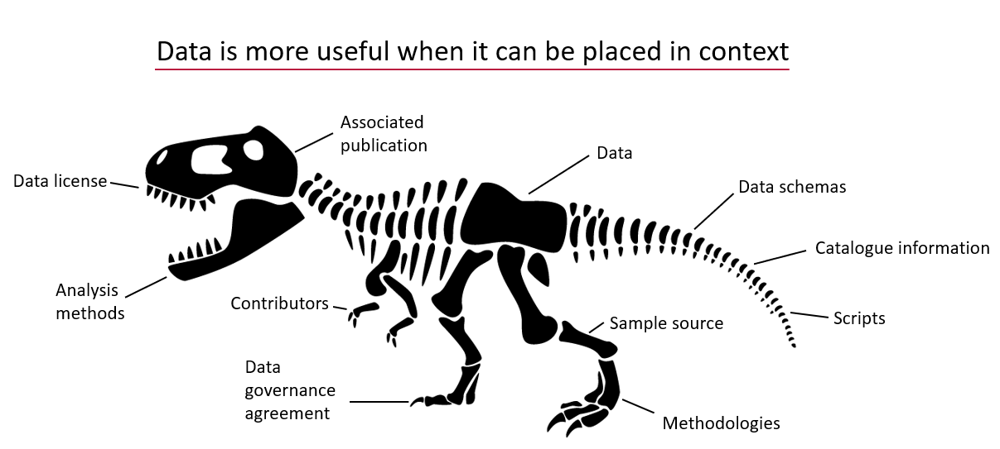
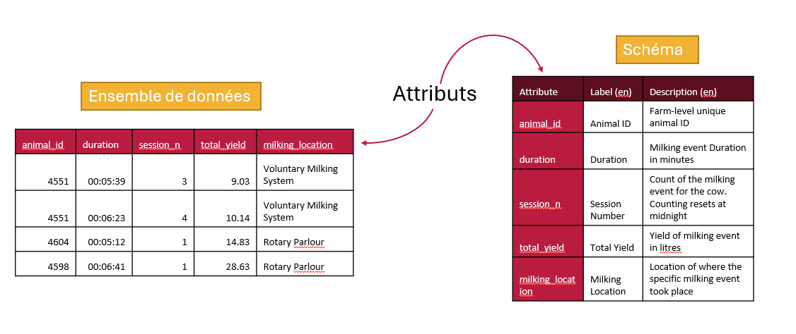

La sémantique est une branche de la linguistique et de la logique qui s'intéresse au sens.
Le moteur sémantique est un ensemble d'outils qui aident les chercheurs à générer un sens accessible par machine pour leurs données.
L'un des premiers outils que nous développons aidera les chercheurs à créer et à utiliser plus facilement des schémas de données.
Les données sans contexte sont difficiles à comprendre et à utiliser :
Lorsque des informations supplémentaires sont fournies, les données peuvent être mieux comprises dans leur contexte. Le contexte est souvent fourni par des métadonnées, ce qui signifie qu'il s'agit de données sur des données. Un schéma est un exemple de métadonnée qui peut être fournie pour aider à mettre les données en contexte et à les rendre plus compréhensibles et utilisables.
Un schéma de données est une métadonnée qui ajoute du contexte à vos données pour aider les autres à comprendre et à utiliser les données. Les données doivent être structurées pour être comprises et un schéma décrit la structure des données.
Pour vous aider à comprendre et à utiliser les données, vous avez besoin d'un schéma de données bien documenté. Un bon schéma vous indiquera quelles sont les étiquettes des colonnes (les attributs) et ce qu'elles signifient. Il vous indiquera les unités et le type de données contenues dans chaque colonne.
Chaque colonne d'un ensemble de données est un attribut et un schéma décrira les données contenues dans chaque colonne (chaque attribut). Il existe plusieurs choses que vous pouvez décrire à propos de chaque attribut de données, par exemple quelles sont les unités des données dans une colonne ? Quel format doivent prendre les données (particulièrement important pour les dates). Plus les fonctionnalités utilisées pour décrire un attribut de données sont nombreuses, plus l'utilisateur des données disposera d'informations pour l'aider à comprendre et à utiliser les données.

Lorsque vous savez quelles données vous allez collecter ou que vous disposez déjà d'un ensemble de données, vous pouvez ajouter du contexte à vos données en écrivant un schéma à l'aide du